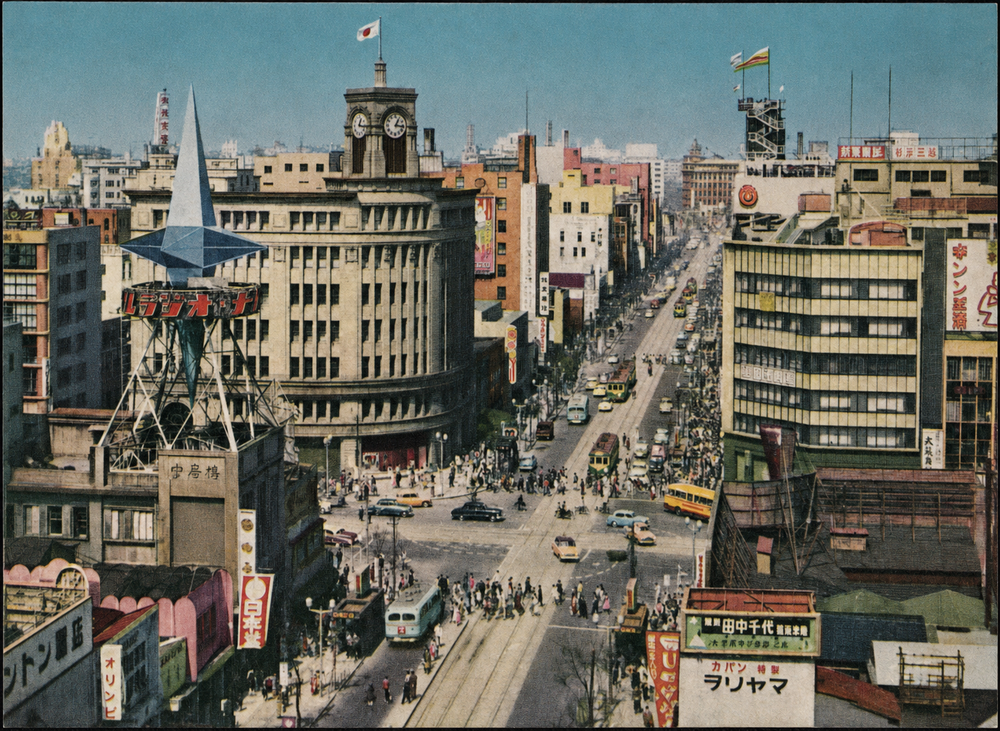

突然の欠勤
スタッフが不在で、すでに最初のレッスンが近づいています。
緊急の状況は、緊急性によって判断の必要性がなくなるなどというふりをせずに考慮することができます。
最も必要な学校をサポートするために東京に設立
思慮深く調整され、適切に説明され、授業日の手配が行われます。
Englishire は、スタッフの不在、採用までの空白期間、時間割の変更、追加の需要に直面している学校をサポートしています。学校が必要としているものをお知らせください。提供できるものを確認する前に、時間割、場所、学習者、指導責任を検討します。
一時的な代講が重要な理由
講師が体調を崩してしまいます。新しい予約には予想よりも時間がかかります。常駐スタッフの準備が整う前にスケジュールが拡張されます。学習者たちは依然として到着しており、保護者は依然として適切な授業を期待しており、学校は引き続き落ち着いて一日を運営しなければなりません。
Englishire は、明日の授業を性急な決定の言い訳として扱うことなく、長期的な人員配置の必要性に慎重に対処する時間を学校に与えます。
一時的な代講は、基準を下げることなく圧力を軽減する必要があります。
Englishireが介入するとき
Englishire は、不在、遅延、または需要の変更により、慎重に調整されたスケジュールが混乱した場合に役立ちます。
スタッフが不在で、すでに最初のレッスンが近づいています。
緊急の状況は、緊急性によって判断の必要性がなくなるなどというふりをせずに考慮することができます。
前の講師が退職し、適切な正規の任命がまだ行われていません。
一時的な代講は、月曜日が近いからという理由だけで任命するのではなく、学校に慎重に採用する余地を与えます。
新しいクラス、季節プログラム、または時間割の変更により、予想よりも多くの授業時間が発生しました。
一時的なサポートにより、学校は需要が季節性、発展途上、または永続的なものであるかどうかを決定できます。
学校では、デモンストレーション レッスン、イベント、集中コース、またはその他の定められた期間に講師を必要とする場合があります。
すべての短い要件が永続的な採用活動になるべきではありません。
実際の学校を中心にデザイン
どの学校にも独自のリズムがあります。確認する前に、Englishire は時間割、学習者の年齢、クラス形式、レッスンの期待、場所、移動、学校の運営基準などを考慮します。
目的は、たまたま自由になった人を誰にでも送ることではありません。学校が実際に運営している教室に対して、賢明な一時的なサポートを提供することです。
正確な。
保証の前に判断。
私たちの統治原則
学校は、急ぎや都合ではなく、実際の時間割、学習者、場所、レッスンの期待、仕事の性質に基づいた答えを受け取るべきです。
完全な文書では、適合性、準備、職業上の行動、およびコミュニケーションが考慮される原則について説明しています。
Englishireの基準を読むご利用の流れ
適切な検討の前に約束がなされていない、単純な順序です。
場所、日付、時間割、学習者グループ、および表紙が必要な理由。
要件は、日記の空きスペースとしてではなく、全体として考慮されます。
講師は確かに自由でなければなりませんが、学校と学習者にとって適切である必要もあります。
講師は、確実に到着するために必要な時間割、レッスン情報、学校の手続きを受け取ります。
Englishireジャーナルより
初めて雑誌に触れる読者のために、本コレクションから 3 つのエッセイを選びました。
注目のエッセイ · 業界
日本の英語学校が何十年もの間、日本に来たいという願望と教えたいという願望をどのように取り違えてきたのか、そしてなぜその思い込みがもはや当てはまらないのか。
エッセイを読むエッセイ・学校運営
人員配置のギャップが 1 つの教室に限定されることはほとんどないのはなぜなのか、また、落ち着いて回復する学校と混乱する学校を分けるものは何なのか。
エッセイを読む
洗練された。
マナー的には英語。理解のある東京。
Englishireについて
Englishire は、東京全域の学校に英語講師の代講・短期手配を提供しています。この作品は、市内の幅広い英語学習環境における実質的な経験によって形作られています。
作法は慎重で礼儀正しく、適切に準備されています。学校、時間割、学習者、旅行、そしてその日の実際的な現実を徹底的に東京について理解します。
Englishire について読むお問い合わせ前のご質問
完全な質問リファレンスからの一部の抜粋。
通常、通知が多ければさらに多くのオプションが提供されますが、緊急の問い合わせも歓迎です。利用できるかどうかは、日付、時間、場所、任務の性質によって異なります。
はい。業務は、1 日の場合、毎週の繰り返しの場合、または長期の一時的な配置に関係する場合があります。
いいえ。すべての課題を確認する前にレビューする必要があります。
場所、日付、時間割、学習者の年齢、クラスサイズ、レッスン形式、および特定の要件を含めてください。
緊急になる前に
学校は、緊急の必要が生じる前に自己紹介をすることができます。学校、その時間割、必要な補償の種類を事前に理解しておくことで、将来のリクエストを評価しやすくなります。
あなたの学校、その時間割、将来必要になる可能性のある一時的なサポートについて教えてください。
学校を紹介してください